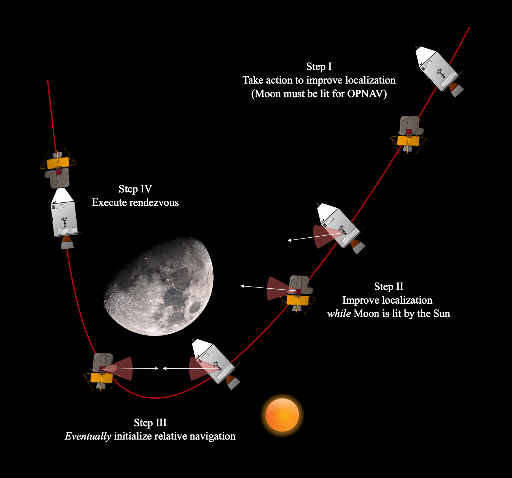

Optimization with Temporal & Logical Specifications
Planning trajectories that follow mission rules, not just reach a target.
Overview
Real missions impose rules beyond "get from A to B." A plan may need to visit one waypoint before another, keep an antenna pointed at Earth while transmitting, or avoid a keep-out zone until a sensor has confirmed it safe. These requirements are temporal and logical specifications.
This project encodes those specifications directly into trajectory generation. The resulting plans satisfy mission logic by construction, rather than through checking after the plan is produced.
The project connects formal specification languages with the convex optimization machinery the lab develops, keeping problems solvable in real time.
Results & media
The project connects temporal logic, smooth robustness measures, and sequential convex programming.
Mission logic in the optimizer
The D-GMSR work provides a smooth robustness measure for Signal Temporal Logic. That makes mission rules usable inside trajectory optimization, while retaining soundness and completeness.
- LanguageSignal Temporal Logic specifications such as always, eventually, and until.
- MeasureD-GMSR handles locality and masking in optimization.
- DemosQuadrotor flight and autonomous rocket landing examples.
